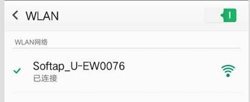
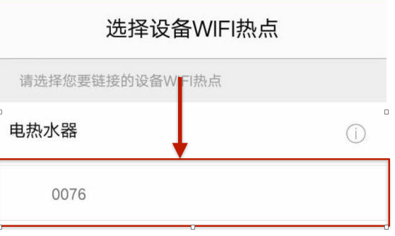
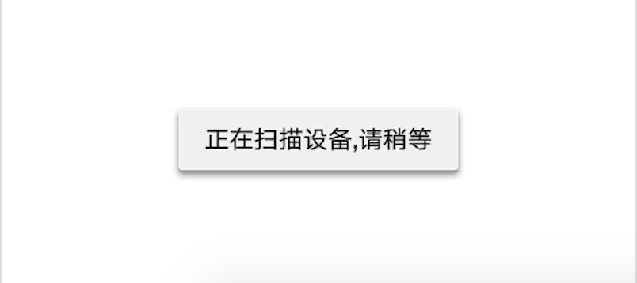
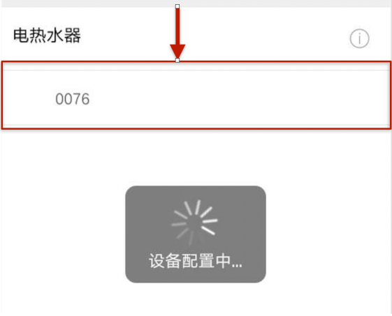
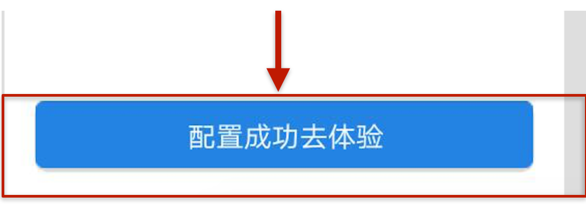
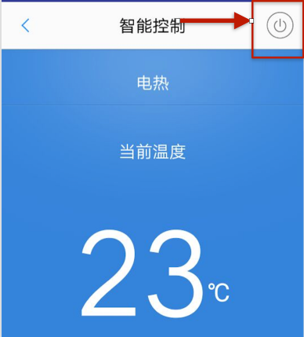
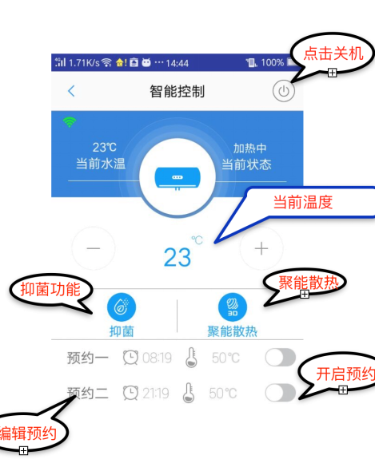

1.下载APP
本APP仅支持android手机下载，点击下方按钮可以直接进行下载，APP软件大小为22.5M。目前适配新上市的A9、S9、Smart型号，后面新的型号会相应支持

 ×
×
2.打开手机WLAN,选择名字为Softap_U_EWxxxx(xxxx与机器的mac地址后四位对应)的无线名称，点击连接。
Mac地址如下图：

连接无线名称如下图所示：
3:打开app,下拉刷新“选择设备WIFI热点“页面，出现设备后，点击设备名称（Mac地址后四位）

4. 点击设备名称后，底部提示正在扫描设备，等待扫描完成

5.扫描完成后，再次点击设备Mac后四位，提示正在配置文件

6.配置完成后点击配置成功去体验

7.界面灰色则 设备为关机状态，点击开关按钮使其开机

8.开机后可进行相关操作
